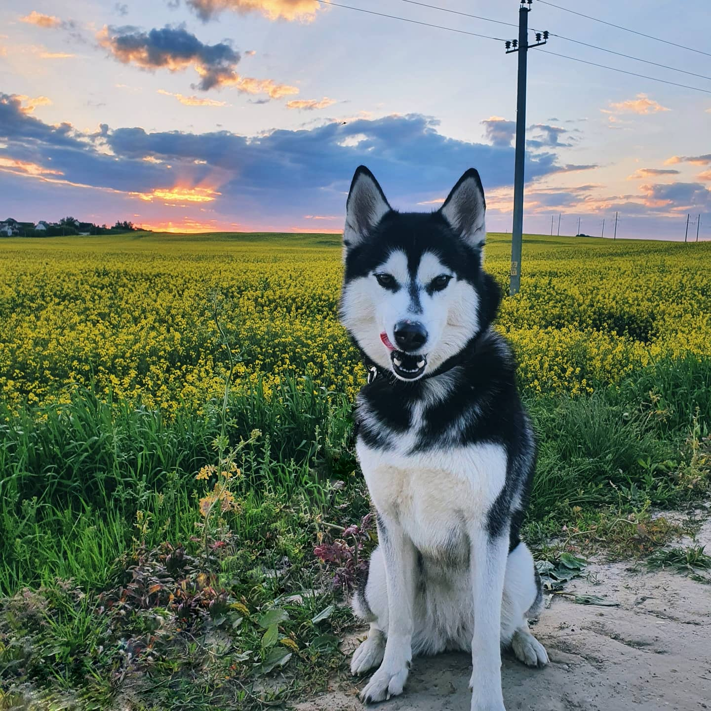

Привет, я - Наталья Курбат!
Немного интересного о себе.
Может это покажется нудным и не интересным, но я обажаю гулять со своей собакой и наблюдать за ней в это время.
Наверно это своего рода медитация! Гуляя с собакой ты просто остаёшся в моменте, забываешь о работе и просто наслаждаешься тем, что тебя окружает:
- четвероногий друг либо идет рядом, либо бесится в траве
- солце, которое то прячется за облака, то выглядывает
- разнообразие людей, которые спешат на работу, занимаются спортом или так же как и я гуляют с собакой
Что меня привело к изучению web-разработки?
Большинство людей на планете сидит во всемирной паутине интернета. Кто-то ищет какой фильм посметреть на вечер, кто-то читает новости, другие ищут тур куда съездить отдохнуть. И я часто задавалась вопросом: Как создаются web-сайты?
.
И вот на моем пути повстречалась школа CodeGirl, которая приоткрыла маленькую занавес этой дяетельности на CODEGIRL OPEN DAY. И меня это затянуло, хотелось узнать по этой теме все больше и больше. Так я и поняла что хочу
освоить это направление.